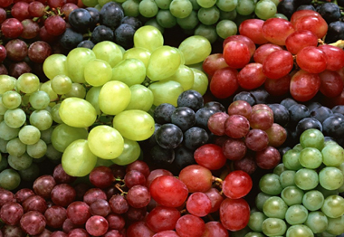

আঙ্গুরের পরিচিতি
আমাদের প্রিয় নবী হযরত মুহাম্মদ (সঃ) এর প্রিয় ফলের মধ্যে একটি ছিলো আঙ্গুর। পবিত্র
কোরআনে অন্তত ১১টি আয়াতে আঙ্গুরের উল্লেখ করা হয়েছে।

চিকিৎসা বিজ্ঞানী ও গবেষকরা আঙ্গুরে নানা খাদ্যগুণ ও ভেষজগুণের সন্ধান পেয়েছেন। তারা
আঙ্গুরকে একদিকে খাদ্য হিসেবে ব্যবহার করছেন অন্যদিকে, ভেষজ শিল্পেও ব্যবহার করছেন। এ
ফলের সুমিষ্ট স্বাদ অনেককেই ফলটির গুণগ্রাহী করে তুলেছে। কালো, সবুজ ও লাল এই তিন রঙের
আঙ্গুর সাধারণভাবে দেখতে পাওয়া যায়। আঙ্গুরের প্রায় ৭৯ শতাংশই পানি। এ ছাড়া, এতে
ফ্রুকটোজ এবং খনিজ উপাদানসহ দেহের জন্য প্রয়োজনীয় কিছু উপাদান আছে। ইমাম মোহাম্মদ বাকের
(র.) বলেছেন, বেহেস্তে চারটি ফল থাকবে সেগুলো হলো, আঙ্গুর, তাজা খেজুর, বেদানা এবং আপেল
।
আঙ্গুরের পুষ্টিগুন
সম্প্রতি মার্কিন যুক্তরাষ্ট্রের উইনকোনসিন বিশ্ববিদ্যালয়ের গবেষকরা আঙ্গুরে এক ধরনের লোহিত উপাদানের সন্ধান পেয়েছেন। 'রেজভারেট্রল' নামের এই রাসায়নিক উপাদান হৃৎপিণ্ড এবং রক্তনালীগুলোকে বুড়িয়ে যাওয়ার হাত থেকে রক্ষা করে। কম ক্যালোরিযুক্ত এ লোহিত উপাদান আয়ু বাড়ায় এবং বুড়িয়ে যাওয়ার প্রক্রিয়াকে কমিয়ে দেয়। এ ছাড়া, ভিটামিন এ, বি, সি ছাড়াও আঙ্গুরে রয়েছে পটাশিয়াম, ম্যাগনেশিয়াম, লৌহ, আয়োডিন এবং ফসফরাসের মতো খনিজ উপাদান। আঙ্গুরের ফ্রুকটোজ সহজে রক্তে প্রবেশ করতে পারে এবং একে গুরুত্বপূর্ণ শর্করা হিসেবে গণ্য করা হয়।
বিশেষ গুনাগুন ওঁ অন্যন্য তথ্য
পুষ্টি ও স্বাস্থ্য নিয়ে মহানবী (স) এবং পবিত্র আহলে বাইতের সদস্যরা অনেক প্রয়োজনীয় ও
গুরুত্বপূর্ণ কথা বলেছেন। তবে ,তারা জনগণকে কয়েকটি বিশেষ খাবার খাওয়ার বিষয়ে উৎসাহিত
করেছেন। হযরত আলী (আ) আঙ্গুরকে শুধু উপকারী ফলই বলেননি একে ও পুর্ণাঙ্গ খাদ্য হিসেবেও
উল্লেখ করেছেন। চিকিৎসা ও পুষ্টিবিদরা আঙ্গুর, খেজুর এবং কিশমিশকে পূর্ণাঙ্গ খাদ্য
হিসেবে বিবেচনা করেন। এ তিনটি খাদ্য থেকে দেহের জন্য প্রয়োজনীয় ভিটামিন পাওয়া যায়।
আঙ্গুর গোত্রীয় ফল দেহের প্রয়োজনীয় শক্তি সরবরাহ করতে পারে। তাই অল্প পরিমাণে আঙ্গুর বা
কিশমিশ খেয়ে মানুষ দৈহিক ও মানসিক পরিশ্রমের জন্য প্রচুর শক্তি পেতে পারেন।
আঙ্গুর হতাশা প্রতিহত করতে সাহায্য করে। বিশেষ করে দুঃখ-বেদনা, মানসিক পীড়ন ও বিষন্নতা
প্রতিহত করার ক্ষেত্রে আঙ্গুর বিশেষ ফলদায়ক হিসেবে প্রমাণিত হয়েছে। হাদিস থেকে আমরা
জানতে পারি, মহাপ্লাবনের পর হযরত নূহ (আ) ভূমিতে নামলেন তখন চারপাশে মৃত মানুষ ও
প্রাণীর অসংখ্য কংকাল দেখতে পান। চারপাশে মহাপ্রলয়ের এই ভয়াবহ ধ্বংসলীলা দেখে হযরত নূহ
(আ )এর কোমল হৃদয় প্রচণ্ডভাবে ব্যথিত হয়ে ওঠে। বেদনায় মুষড়ে পড়েন তিনি। এ সময় হতাশাবোধ
কাটিয়ে ওঠার জন্য তাকে কালো আঙ্গুর খাওয়ার পরামর্শ দিয়ে অবতীর্ণ হয় ঐশী বাণী।
আধুনিককালের চিকিৎসা বিজ্ঞানীরা কালো আঙ্গুরে হতাশা বা বিষন্নতা প্রতিরোধক উপাদানের
সন্ধান পেয়েছেন। এ ধরনের আঙ্গুরে পটাশিয়াম আছে আর তাই হতাশা কাটিয়ে উঠতে সাহায্য করে এ
আঙ্গুর। বুক ধড়ফড় করার মতো উপসর্গও দূর করতে সাহায্য করে পটাশিয়াম। এই উপাদান বিষন্নতা
দূর করে ও সুখ এবং আনন্দের একটি অনুভূতি সৃষ্টি করে। আঙ্গুর এভাবে হৃৎপিণ্ডের অনিয়মিত
স্পন্দন দূর করে মানসিক বিষন্নতা কাটিয়ে উঠতে সাহায্য করে।
ইরানের বিশ্বখ্যাত ইসলামী দার্শনিক ও বিজ্ঞানী আবু আলী সিনা আঙ্গুরকে অন্ত্রের বেদনা
উপশমকারী হিসেবে বর্ণনা করেছেন। দেহে টক্সিন বা অধিবিষ নামে যে সব বিষাক্ত উপাদান জন্মে
তা দূর হয় আঙ্গুর খাওয়ার মাধ্যমে। এ ছাড়া, আঙ্গুর রক্ত পরিশোধনের কাজও করে। আর এ কারণে
শ্রান্তি দূর হয় ও দেহ চাঙ্গা হয়ে ওঠে।
আঙ্গুর উচ্চরক্ত চাপ, ডায়রিয়া ও ত্বকের সমস্যা দূর করতেও সহায়তা করে।
ত্বকের সৌন্দর্যবর্ধনের জন্য মুখে ভেষজ বা ভেষজ নয় এমন 'মাস্ক' ব্যবহার করা হয়। অল্প
সময়ের জন্য এ জাতীয় 'মাস্ক' মুখে রাখতে হয় এবং তারপর তা ধুয়ে ফেলা হয়। আঙ্গুরের নির্যাস
থেকে সহজেই প্রাকৃতিক 'মাস্ক' তৈরি করা যেতে পারে। এ ধরণের 'মাস্ক' ব্যবহারে মুখের বলি
রেখা দূর হতে পারে। এ ছাড়া, ত্বকের ঔজ্জ্বল্য বাড়াতে সাহায্য করে এ ধরণের 'মাস্ক।'
আঙ্গুর থেকে নানা ধরণের উপাদান তৈরি হয়। এ সব উপাদানের মধ্যে আঙ্গুরের নির্যাস, আঙ্গুর
বীজের তেল, সিরকা, আঙ্গুরের টক রস, কিশমিশ প্রভৃতি রয়েছে।
আঙ্গুর শুকিয়ে তৈরি হয় কিশমিশ এবং কিশমিশে ৬০ শতাংশ ফ্রুকটোজ রয়েছে। খুবানি বা কুল
জাতীয় ফলে যতটা এন্টিঅক্সিডেন্ট থাকে কিশমিশেও প্রায় সে পরিমাণ বিজারক উপাদান থাকে।
আরেকটি মজার ব্যাপার হলো, কিসমিসকে যতই শুকানো হবে ততই তার পুষ্টিমান বাড়বে। তাই কিশমিশ
আঙ্গুরের চেয়ে বেশি শক্তির যোগান দিতে পারে। শ্বাসতন্ত্রের অসুখ-বিসুখসহ যকৃত,
মুত্রথলি, বৃক্ক বা কিডনির নানা রোগ সারিয়ে তোলার ক্ষেত্রে সহায়তা করে কিশমিশ। বিশেষ
ধরণের কিশমিশের চমৎকার সব গুণের কথা বলা হয়েছে পবিত্র হাদিসে। বীচি ছাড়া কালো ও লাল
আঙ্গুর থেকে যে সব কিশমিশ তৈরি হয় সে প্রসঙ্গে কথা বলেছেন ইসলামের নবী হযরত মুহাম্মদ
(স)।
মহানবী হযরত মুহাম্মদ (স) বলেছেন, তোমরা কিশমিশ বা আঙ্গুর খেতে অবহেলা করো না কারণ
আঙ্গুর ও কিশমিশ দেহমন ভাল রাখে । এ ধরনের আঙ্গুর স্নায়ুতন্ত্র ভাল রাখতে সাহায্য করে
এবং দুর্বল দেহকে চাঙ্গা করে তুলতে সহায়তা যোগায়। হাদিসে বলা হয়েছে, সকালে নাস্তার আগে
খালি পেটে বীচি ছাড়া আঙ্গুর হতে তৈরি ২১টি কিশমিশ খেলে শারীরিক দুর্বলতা এবং আল জাইমার
রোগ থেকে মুক্তি পাওয়া যায় । সাম্প্রতিক জরীপেও এর সত্যতা খুঁজে পাওয়া গেছে। বৃটেন থেকে
প্রকাশিত 'কেমেস্ট্রি অ্যান্ড ইন্ডাস্ট্রি' নামের সাময়িকীতে বলা হয়েছে, কিশমিশে এমন
কিছু শক্তিশালী উপাদান আছে যা আলজাইমার রোগ প্রতিহত করতে সহায়তা করে। গবেষণাগারের
পরীক্ষায় দেখা গেছে, কিশমিশের অ্যান্টো-সিয়ানিন এবং পলি-ফেনোলিক উপাদানসহ আরো কিছু
উপাদান আছে যা আলজাইমার সারিয়ে তোলার ক্ষেত্রে সহায়তা করে। এ ছাড়া, এ জাতীয় কিশমিশে
ওমেগা থ্রি, ওমেগা সিক্স, ফ্যাটি এসিড এবং ভিটামিন ই পাওয়া যায়।
ইরানের চিকিৎসা বিষয়ক ওয়েব সাইটে প্রকাশিত নিবন্ধে বলা হয়েছে, বীচিবিহীন আঙ্গুর থেকে
তৈরি কিশমিশে ক্যান্সার প্রতিরোধ করার ক্ষমতা আছে । শুধু তাই না কোনো কোনো ক্যান্সার
এবং হৃদরোগ সারিয়ে তুলতে সাহায্য করে এ ধরনের কিশমিশ। এ জাতীয় কিশমিশ রক্তনালীগুলোকে
ফ্রি রেডিক্যাল থেকে মুক্ত হতে সাহায্য করে এবং রক্তনালীগুলোর কোমলতা বজায় রাখে। আঙ্গুর
থেকে যে সব জিনিস বানানো হয় তার অন্যতম হলো সিরকা। খেজুর বা আপেল হতেও সিরকা তৈরি হয়।
সালাদ, আচার প্রভৃতি তৈরিতে সিরকা অপরিহার্য।
খাবারের সাথে সিরকা খেলে তাতে রক্ত প্রবাহ সহজতর হয়। এ ছাড়া, রক্তের চর্বি ও বিষাক্ত
পদার্থ দূর করতে সাহায্য করে এবং কোলেস্টরেল কমায় । সিরকা মানুষের প্রজ্ঞা ও মানসিক
শক্তি বাড়ায় এবং হৃৎপিণ্ডকে শক্তিশালী করে। সিরকায় সাইট্রিক এসিড আছে। খাদ্যের মধ্যে যে
ক্যালসিয়াম আছে তা দেহকে গ্রহণ ও হজমে সাহায্য করে এবং একই সঙ্গে বিপাকক্রিয়াও বাড়াতে
সাহায্য করে এই সাইট্রিক এসিড। পরিপাকতন্ত্রে অনেক ব্যাকটেরিয়া নির্মূল করতে সাহায্য
করে সিরকা। অন্ত্রের নানাবিধ রোগ যেমন, ডায়রিয়া, পেটব্যাথা এবং কোষ্টকাঠিন্যে যারা কষ্ট
পান তারা সিরকা ব্যবহার করে এ সব সমস্যা থেকে মুক্তি পেতে পারেন।
সিরকা মাড়ির প্রদাহ দূর করতে সাহায্য করে এবং পরিপাকতন্ত্রে এসিড নির্গমনের ভারসাম্য
বজায় রাখে। দুর্বল চিত্তের মানুষরা সিরকা খেলে উপকার পাবেন বলে চিকিৎসাবিদরা মনে করেন।